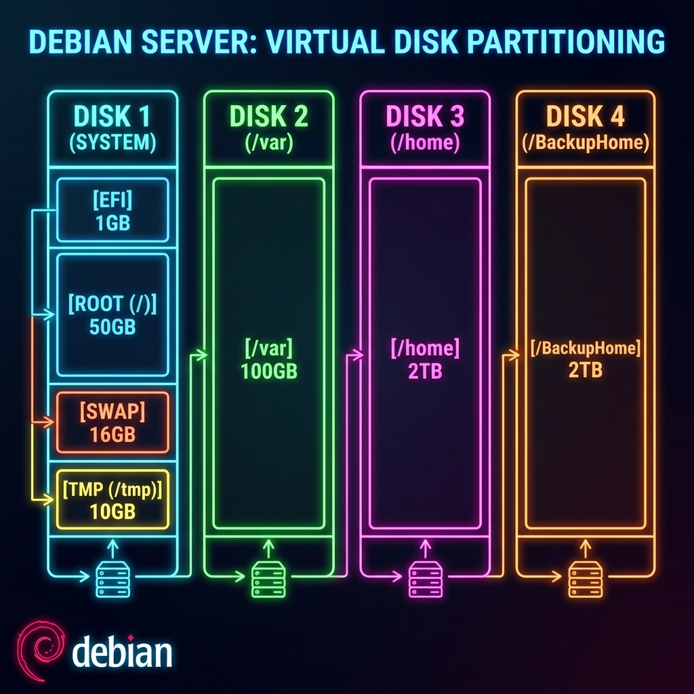

SAÉ 1.2
S'initier au réseau
informatique
Première SAÉ orientée réseaux : prise en main des fondamentaux d'une infrastructure locale, configuration de base des équipements et validation du fonctionnement du LAN.
Description & Objectifs
Contexte du projet et compétences visées
Dans le cadre de cette SAÉ, nous avons été recrutés en tant que techniciens réseau pour la société Fibre&Company, une entreprise spécialisée dans le déploiement de la fibre optique. Son réseau initial très basique (60 postes utilisateurs, switchs non paramétrables, adressage à plat, box ADSL gérant les services de DNS cache, DHCP et routage sans cloisonnement) devenait un frein et un risque de sécurité majeur, d'autant que l'entreprise projetait de doubler ses effectifs (passage à plus de 120 postes).
L'objectif principal était de **concevoir et réaliser un prototype sécurisé et redondant** sur maquette avant le passage en production. Il s'agissait de segmenter le trafic en VLANs, de configurer le routage inter-VLANs, d'agréger les liaisons commutées et d'installer un serveur de services Debian 13 virtualisé sur un hyperviseur **Proxmox VE**.
Ce projet a permis de mobiliser des compétences transverses en adressage IPv4, en protocoles de niveau 2 (RSTP, LACP), en routage de niveau 3, ainsi qu'en administration système Linux (DNS récursif, serveurs de fichiers Samba, transferts de configuration TFTP et politiques de sécurité de l'ANSSI).
Apprentissages Critiques mobilisés
Apprentissages critiques du référentiel BUT R&T travaillés dans ce projet
Compétences théoriques et pratiques mobilisées pour la restructuration globale de l'architecture LAN et de ses services.
🌐 Administration & Commutation
- Segmentation en 6 VLANs métiers pour isoler les flux.
- Spanning Tree RSTP pour éliminer les boucles (3750 configuré en Root).
- Liaisons agrégées LACP (EtherChannel) pour la redondance et la bande passante.
🐧 Systèmes & Services
- Debian 13 VM multi-disques (XFS pour le /home et Ext4 pour le reste).
- Automatisation de l'intégration utilisateurs via
newusersetpwgen. - DNS récursif cache (Bind9), serveur web (Apache2) et serveur TFTP.
🔒 Sécurité & Robustesse
- Port-Security sur les switchs, protection contre les tempêtes de broadcast.
- Désactivation de Telnet/HTTP, accès SSH sécurisé par clés RSA 4096 bits (ANSSI).
- Sauvegardes incrémentales du disque utilisateur via
xfsdump.
Tâches réalisées
Déroulement technique et méthodologie appliquée
1. Conception du plan d'adressage IPv4 sans VLSM
Pour héberger 150 machines par VLAN, nous avons dimensionné les masques au plus près. Le masque
requis est un /24 (255.255.255.0), offrant 254 adresses utiles (le /25 étant limité
à 126 hôtes).
Nous avons découpé le réseau privé 172.16.0.0/16 de la manière suivante :
• VLAN 200 (Serveurs) : 172.16.0.0/24 (IP serveur : 172.16.0.10)
• VLAN 210 (Comptabilité) : 172.16.1.0/24
• VLAN 220 (Administratif) : 172.16.2.0/24
• VLAN 230 (Vente) : 172.16.3.0/24
• VLAN 240 (Supervision) : 172.16.4.0/24
• VLAN 250 (Admin Informatique) : 172.16.5.0/24
• VLAN 696 (Non utilisé / Natif) : 172.16.96.0/24
• Lien point-à-point L3 (Switch L3 ↔ Routeur 2911) : 172.16.254.0/30
2. Déploiement et configuration des équipements actifs Cisco
Sur le switch L3 (Catalyst 3750), nous avons activé le routage IP et configuré les interfaces virtuelles (SVI). Nous y avons déployé le serveur DHCP pour l'ensemble des VLANs (sauf le VLAN 200) avec attribution du serveur DNS de l'entreprise. Les switchs d'accès ont été reliés au commutateur racine par des liaisons EtherChannel LACP redondantes.
3. Installation et partitionnement Debian 13 VM
La machine virtuelle Debian 13 a été installée sous Proxmox VE en mode UEFI avec 4 disques virtuels
distincts :
• Disque 1 (50 Go) : /boot/efi (500 Mo FAT), / (40 Go
Ext4), swap (6 Go), /tmp (4 Go Ext4)
• Disque 2 (60 Go) : /var (Ext4) pour les données variables (logs,
sites)
• Disque 3 (70 Go) : /home (XFS) pour les répertoires personnels
• Disque 4 (80 Go) : /BackupHome (Ext4) pour héberger les fichiers
de sauvegarde
4. Provisionnement automatique et restriction d'accès
Pour créer les comptes sans utiliser de boucles Bash (exigence du responsable), nous avons utilisé
l'utilitaire newusers couplé à pwgen pour générer des mots de passe
robustes de 10 caractères avec symboles. Seuls les 5 premiers utilisateurs (groupe Admin
Informatique) ont reçu un interpréteur /bin/bash, les autres étant redirigés
vers /usr/sbin/nologin.
5. Services applicatifs & Sécurité globale
• DNS Cache (Bind9) : Résolution récursive réactive locale.
• Partage Samba : Accès invité en lecture seule. Dépôt autorisé aux groupes
Administratif et Admin Informatique. Protection des données par l'activation du
Sticky Bit (chmod +t) sur les dossiers partagés, empêchant la suppression des fichiers
par un tiers.
• Web (Apache2) & Sauvegarde TFTP (stockage d'IOS Cisco et de
fichiers de configuration).
• Durcissement : Clés SSH RSA de 4096 bits (conforme ANSSI), désactivation de
SSHv1, masquage des bannières de version, limitation des ciphers aux plus sécurisés (AES-GCM et
ChaCha20-Poly1305).
Résultats & Preuves
Livrables, topologie et configurations techniques réelles du prototype
Topologie Réseau Logique (Fibre&Company)

Figure 1 : Maquette réseau Cisco & Hyperviseur Proxmox VE (VLANs & routage L3)
Schéma de partitionnement des disques Debian 13 VM

Figure 2 : Architecture multi-disques et points de montage système/données/sauvegardes
! Routage Inter-VLAN et passerelle
ip routing
interface Vlan210
ip address 172.16.1.254 255.255.255.0
!
! Pool DHCP (Exclusion des 5 dernieres IP)
ip dhcp excluded-address 172.16.1.250 172.16.1.254
ip dhcp pool Pool-Compta
network 172.16.1.0 255.255.255.0
default-router 172.16.1.254
dns-server 172.16.0.10! Routage statique local & default route vers Box
ip route 0.0.0.0 0.0.0.0 192.168.1.1
ip route 172.16.0.0 255.255.0.0 172.16.254.1Autoévaluation réflexive
Analyse critique de mon expérience et de ma progression
Notions de base
En développement
Autonome
Peut enseigner